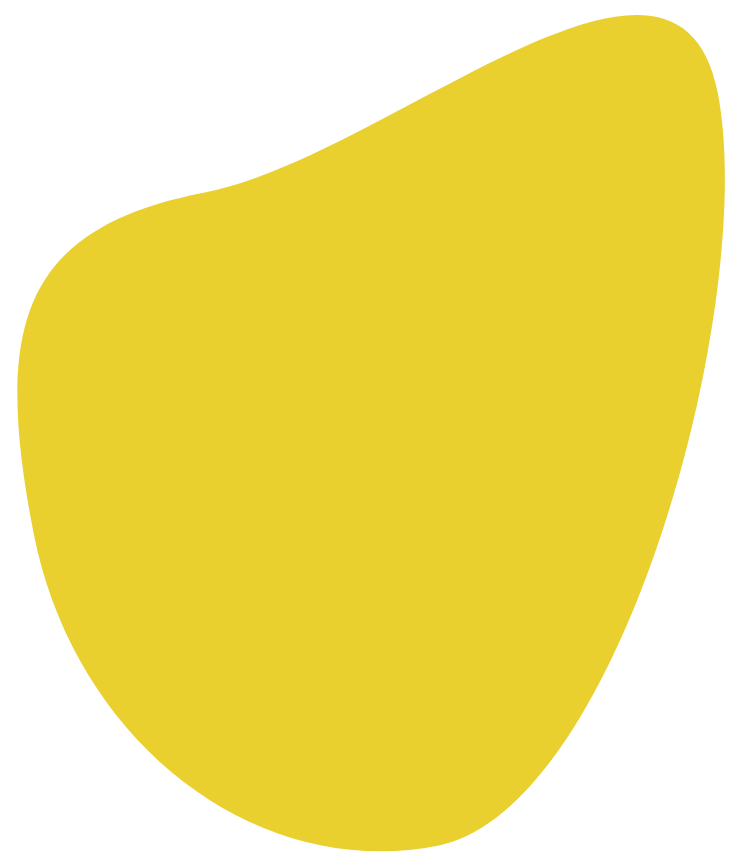

I'm Chikhi Ryan
This is my official portfolio website to showcase my
all works
development.


This is my official portfolio website to showcase my
all works
development.
These are the two sectors where I studied
Sciences and Technologies of Industry and Sustainable Development. It was hard to enter the Arduino programming class, but I did work hard to get in. Learning Arduino wasn't this hard. We parcticed a lot we did a lot of project in a year.
Digital System, IT and Network, actually in this sector, I'm learning some new programming languages (C, C++, Javascript). I'm also learning how to install a operating system (Linux), how to use a command line and more is comming in the future.
These are a the shcools where I studied, click on the text to see project
These are my hobbies
I started VolleyBall mid year 2022, I liked the sport and found it funny. I did an intensive 2 weeks traineship, 4 hours per day, and I was motivate to go higher to smash harder and receiver perfectly the ball.
It been now 5 years that I'm a photographer, I did a lot of photos, worked with some famous content creator. Until being me to a content creator. You can find my work on the footer of this page in my Instagram.
I started programming the first year of high school, with (HTML and CSS) it was hard to learn, now I know a little better those languages. At first I helped my self with tutorials, after by my self I copied some famous website and now this is my second web page fully done by me.